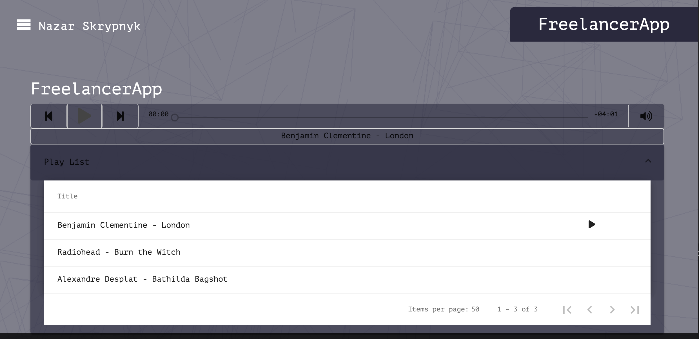
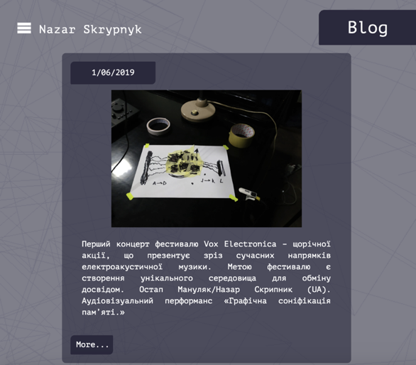
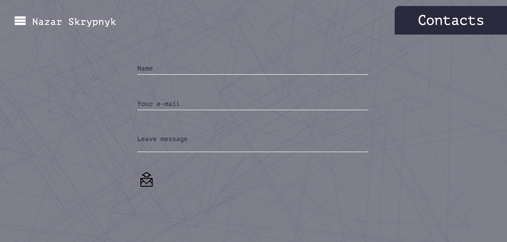

Nazar Skrypnyk - composer
personal website
General
Angular 8 is used for development
Responsive design
Background animation - Three.js
Header
Menu - youtube menu effect. Advantages - compacted, good for responsive design.
Routing identifier instead of navbar. Realized by Location + Router.events
Animation - BrowserAnimationsModule + ScrollDispatcher.
Preloading animation - ngx-ui-loader.
Footer
Footer
Home
Typewriter. Sound - Web Audio API.
About
Gallery - ngx-image-gallery: easy to configure (interfaces for config and image) and to use (thumbnails, navigation with keys, etc.).
Storage for images - Firebase.
Music
Tabs - Angular Material.
Audio - embedded Mixcloud (with iframe).
Video - ngx-youtube-player.
Software
Page for my own small apps. For example, FreelancerApp - assistant for freelance workers (planning time, task list, music player). LittleComposer - app for everybody who wants to start making music, etc.
Blog
Blog
Contacts
Contact form (Angular Material) with validation.
Admin
Admin permission - CanActivate.
Hidden blocks instead of modals.
Stack of technologies:


GitHub repository:
https://github.com/nazarskr/NskrComposer